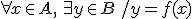

Matemática: Funciones
Condiciones de una Función
Para que una relación sea considerada función debe cumplir con dos condiciones:
Existencia

La “existencia” significa que todas las “x” deben tener una imagen.
Unicidad
La “unicidad” significa que para todas las “x” hay una sola imagen.
Si la relación no cumple con alguna de estas dos condiciones, decimos que no es función.
Ejemplo:
|
No es función Al mover una recta paralela al eje “y” (vertical) observamos que corta la curva en dos puntos. Luego, podemos decir que no cumple la condición de unicidad porque cuando x = 4 tiene dos imágenes. |
Es función Al mover una recta vertical paralela al eje “y”, corta al gráfico en un solo punto, porque cumple la condición de unicidad. Y además, cada x tiene imagen, es decir, verifica la condición de existencia. |

En los siguientes videos se explica cómo determinar cuándo una relación es función:
Link - Revisar si un conjunto de puntos representa una función
Obra publicada con Licencia Creative Commons Reconocimiento Compartir igual 4.0